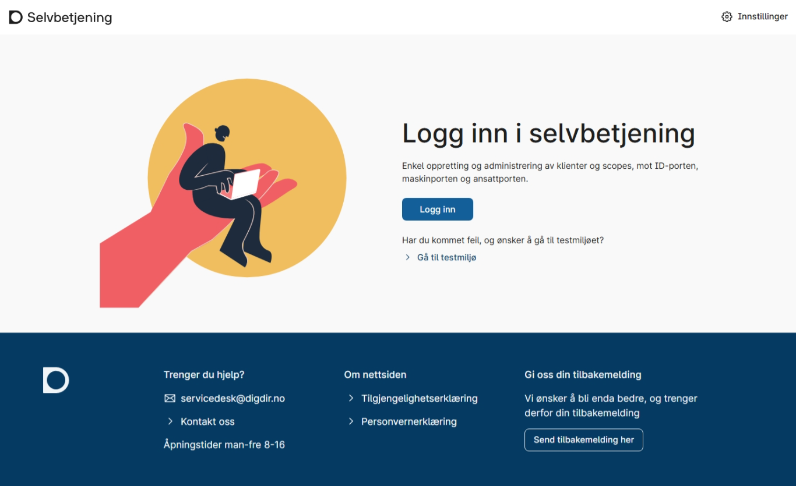
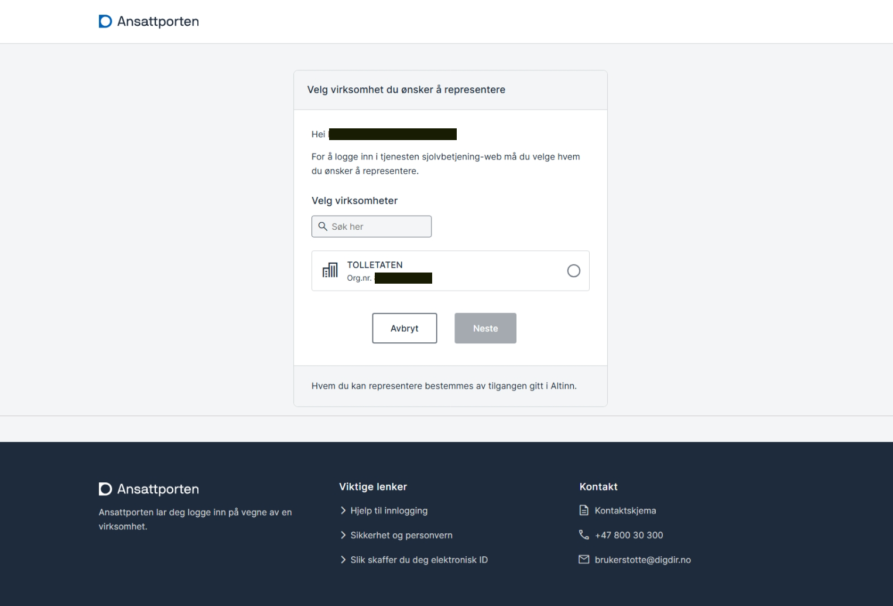
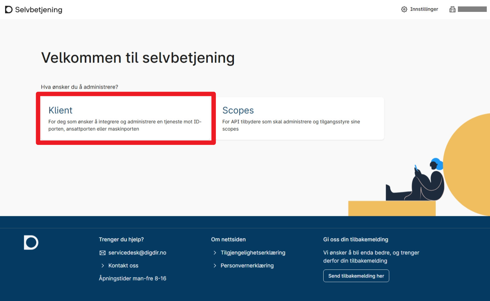
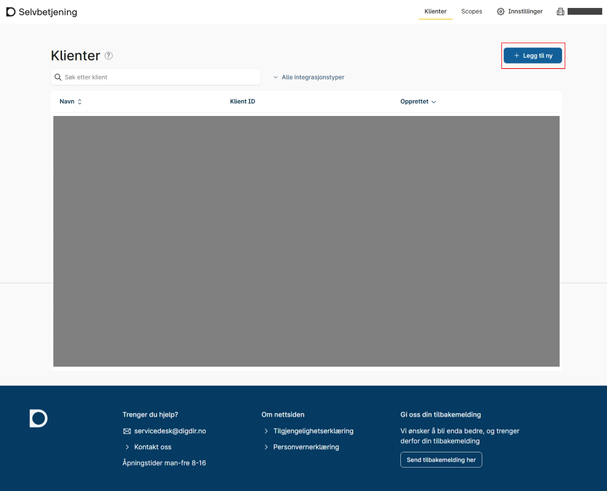
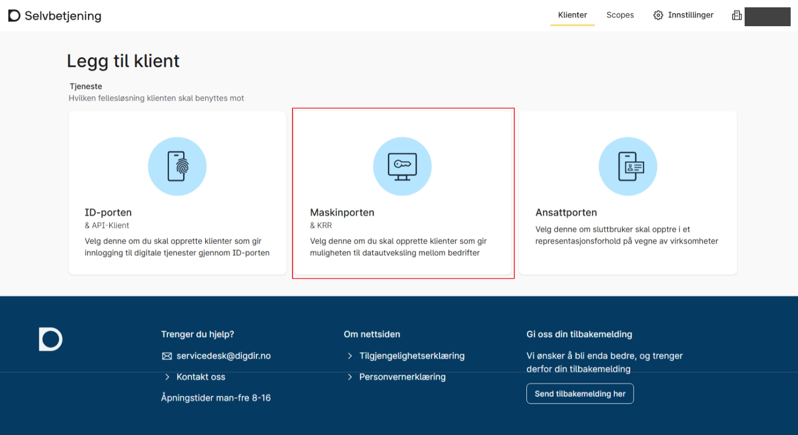
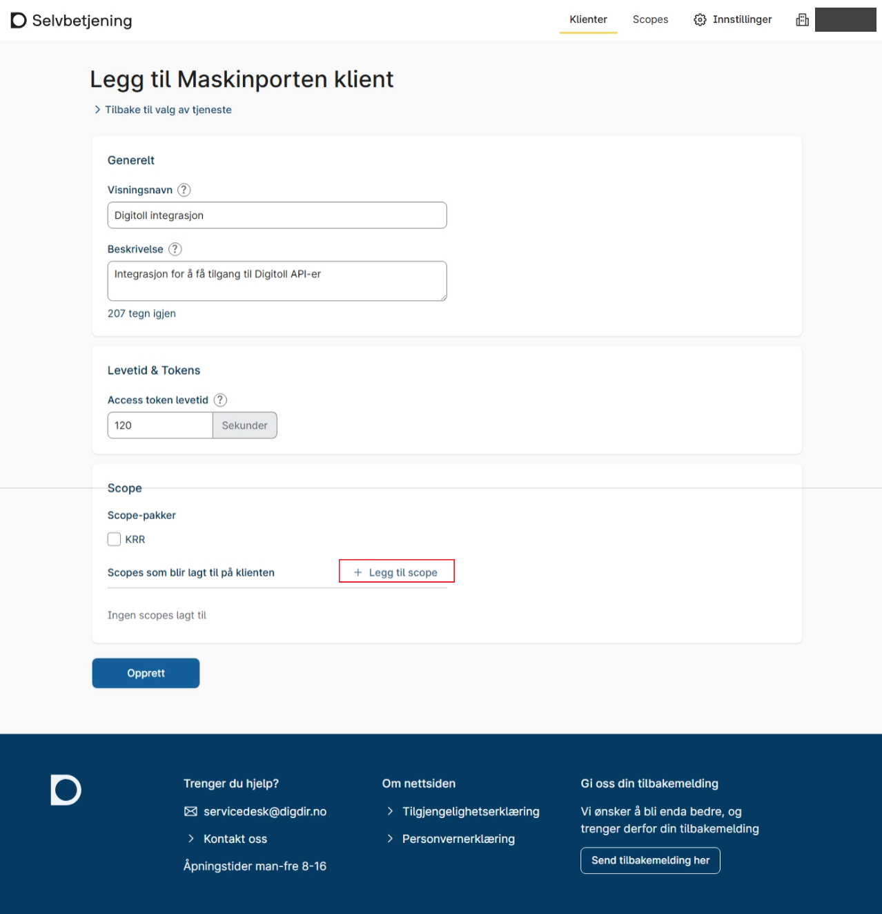
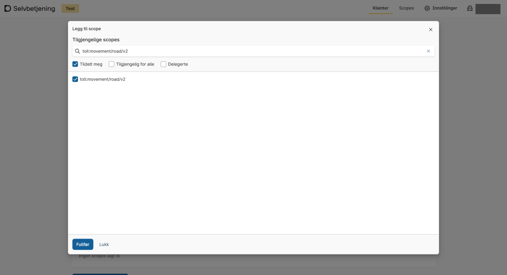
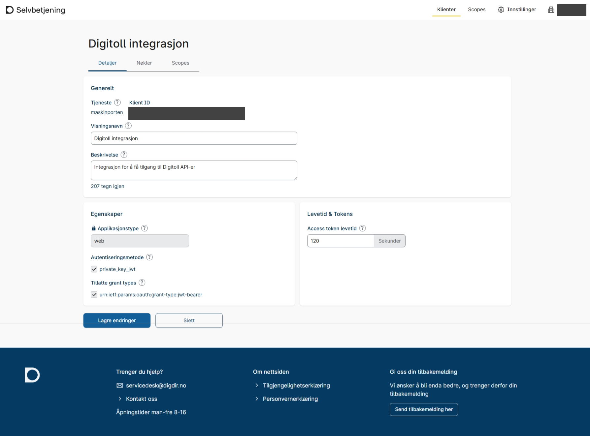

Onboarding
Once the certificate has been ordered, the next step is onboarding the business with Norwegian Customs and Digdir (Maskinporten).
1. Register with Norwegian Customs (all)
You can find the registration form for Digitoll here: Registration: Digitoll-actor - Norwegian Customs.
Norwegian Customs provides access to the scope(s) needed for the relevant integration, see the overview of scopes on Technical integration.
Foreign businesses can now proceed to Technical integration, as setup in Maskinporten is not needed.
2. Set up the Maskinporten integration
This step applies only to Norwegian businesses with a Norwegian business certificate.
It is not necessary if you chose Foreign business in the previous step.
2.1 Become a customer of Digdir
To get access to Samarbeidsportalen, the business must be a customer of Digdir. Contact Digdir via servicedesk@digdir.no.
2.2 Create an integration with Digdir
Create a client integration in Samarbeidsportalen and connect it to Norwegian Customs' API (scope).
- PROD: log in to Samarbeidsportalen self-service.
- TEST: log in to Samarbeidsportalen self-service (test).
When you create the integration:
- Select the Difi service Maskinporten.
- Add the scopes you need (see Technical integration for an overview).
-
The integration's identifier: this is the value that goes in the
issfield of the JWT grant you send to Maskinporten (see Technical integration). - Name of the integration: choose freely. It can be worthwhile to use a name that distinguishes between the different services and APIs at Norwegian Customs, since we have several APIs.
-
Grant type: use
urn:ietf:params:oauth:grant-type:jwt-bearer.
2.2.1 Go to self-service for integrations
-
Log in to self-service.

-
Select your business.

-
If you are integrating a service, select Client.

2.2.2 New integration
-
Here is a list of your clients. For a new client integration, click Add new.

-
Select Maskinporten.

-
After filling in your chosen name and description, click Add scope.

-
Select the scopes you need; you can find an overview on Technical integration.

-
After clicking Create, you will get an overview of your integrations/clients. Click the one you just created to see details and edit if needed.
